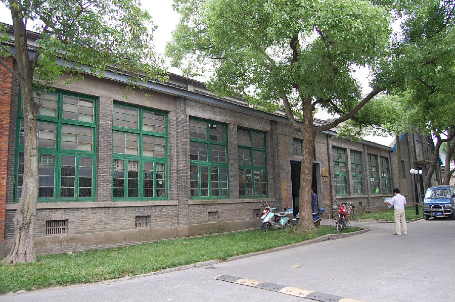
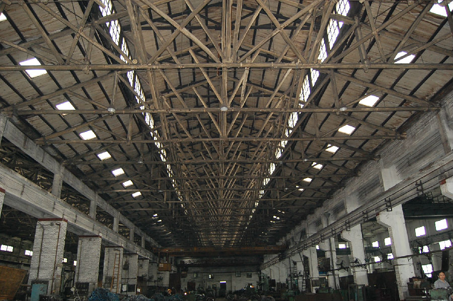

嘉兴市文物保护网 · 市级文物保护点 · 2020-11-09 · 原文


嘉兴冶金机械厂老厂区位于嘉兴市南湖区南湖街道甪里街112号，嘉兴冶金机械厂前身是1940年创办的杜锦记机器翻砂厂，1951年3月由政府接收。接收时，全厂仅有工人10名。据老职工回忆部分厂房为苏联援建项目，厂房面积为88273.29平方米。现建议保留9个车间厂房（成品库、木模车间、木模仓库、钢材库、钣金车间、工具车间、减速机车间、熔铜车间、质计科），共占地面积13421平方米。嘉兴冶金机械厂曾经是建国初期嘉兴为数不多的规模较大的企业之一，保留部分老机械设备，具有很强的典型性和代表性，具有很高的历史和科学价值。2009年公布为嘉兴市文物保护点。